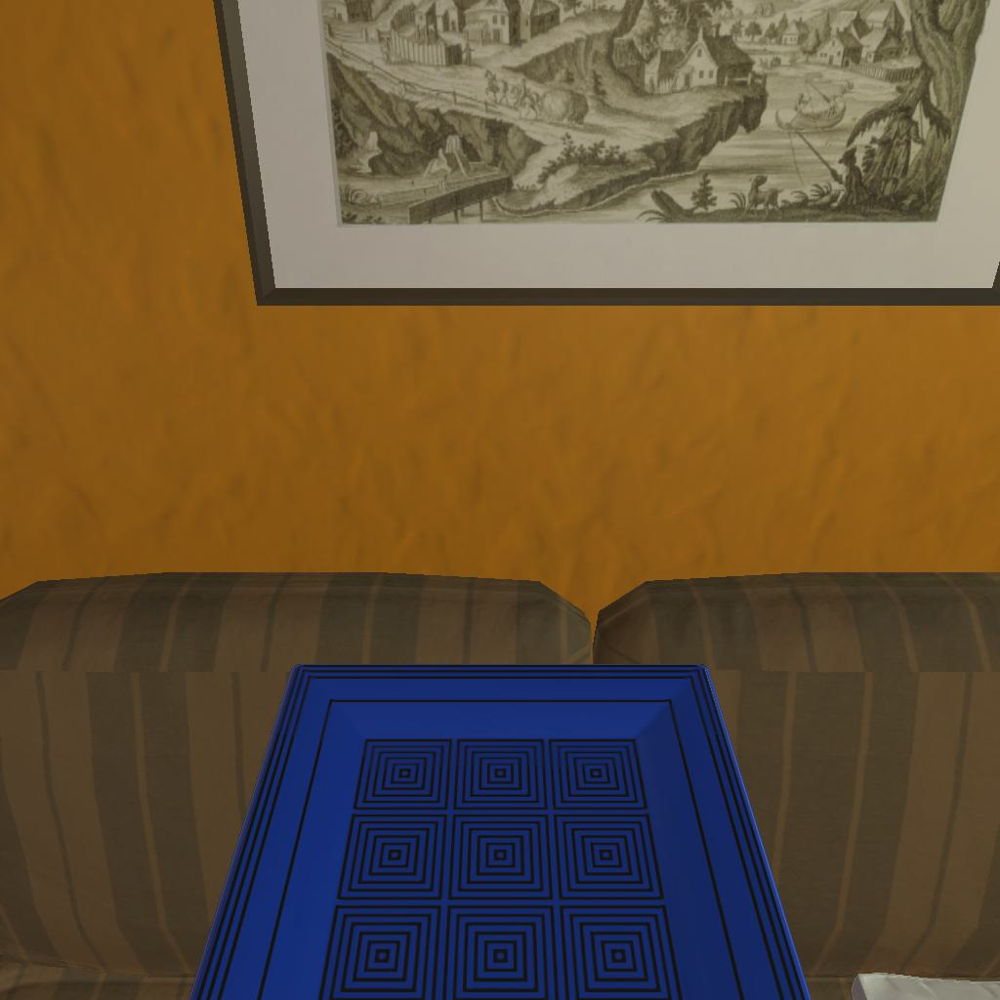

---------------------------------------------------------task: 3---------------------------------------------------------
--------------------------------------------------------------------------------------------------------------------------------------------------------------------
--------------------------------------------------------------------------------------------------------------------------------------------------------------------
Step:--------------------------------------------------------------------------11-------------------------------------------------------------------------------
----------------------------------------
VLM Prompt:
Image1:
Image2:
**Instruction**
1. Analyze the provided images to identify all visible household objects and compare the difference between images (e.h. whether the object is opened or not and taken on hand or not), focusing on those relevant to the task description "examine the plate with the floorlamp."
2. Use the analysis of images and the task hint "The agent must find an object of the desired type, locate and turn on a light source with the desired object in-hand." to answer the question: what is the most reasonable action in the choices for the task description "examine the plate with the floorlamp"?
3. Decide and write the answer using the template: The answer is: (i): , where i is the real number. If there is no desired object in images, search every place based on **Initial Observation** to find the object. And if no one is exactly correct, choose a similar answer.
**Initial Observation**
You are in the middle of a room. Looking quickly around you, you can see armchair (1), garbagecan (1), tvstand (1), shelf (1-5), sofa (1), coffeetable (1), sidetable (1-2), drawer (1)
**Answer Choices**
(1): go to armchair 1
(2): go to garbagecan 1
(3): go to tvstand 1
(4): go to shelf 1
(5): go to shelf 2
(6): go to sofa 1
(7): go to coffeetable 1
(8): go to sidetable 1
(9): go to sidetable 2
(10): go to drawer 1
(11): go to shelf 3
(12): go to shelf 4
(13): go to shelf 5
(14): put plate 2 in/on sofa 1
(15): examine plate 2
(16): examine sofa 1
**Answer**
Let's think step by step by following the instructions.
----------------------------------------
----------------------------------------
Original Response:
1. Analyzing the images, we can see a framed picture on the wall and a blue plate with a pattern in the agent's hands. There is also a brown sofa in the background. There is no floorlamp visible in either image, and there are no discernible differences between the two images regarding the objects mentioned in the task description. The blue plate is already in the agent's hands in both images.
2. Based on the task description "examine the plate with the floorlamp" and the task hint, the agent needs to find a light source and turn it on while holding the desired object, which is the plate in this case. Since no lamp is visible in the images, we must assume it's located elsewhere in the room.
3. The most reasonable action to take would be to search for the floorlamp in the room, as it is not visible in the provided images. However, since no action related to finding or turning on a floorlamp is listed in the answer choices, we must choose an action that could potentially lead to locating the floorlamp by examining or interacting with objects that might be near a floorlamp. The most similar action to this would be to examine the plate, which is already in hand, and potentially move around the room to find the floorlamp while examining the plate.
The answer is: (15): examine plate 2.
----------------------------------------
----------------------------------------
>>> Refine Original VLM Response and Get Pure Action: examine plate 2
----------------------------------------
-----------------------------------------------------------------
Running time: 65.81672692298889 seconds
Total Money: 0.9547900000000001
-----------------------------------------------------------------
-----------------------------------------------------------------
Text Observation:This is a normal plate 2
-----------------------------------------------------------------
UNSUCCEED